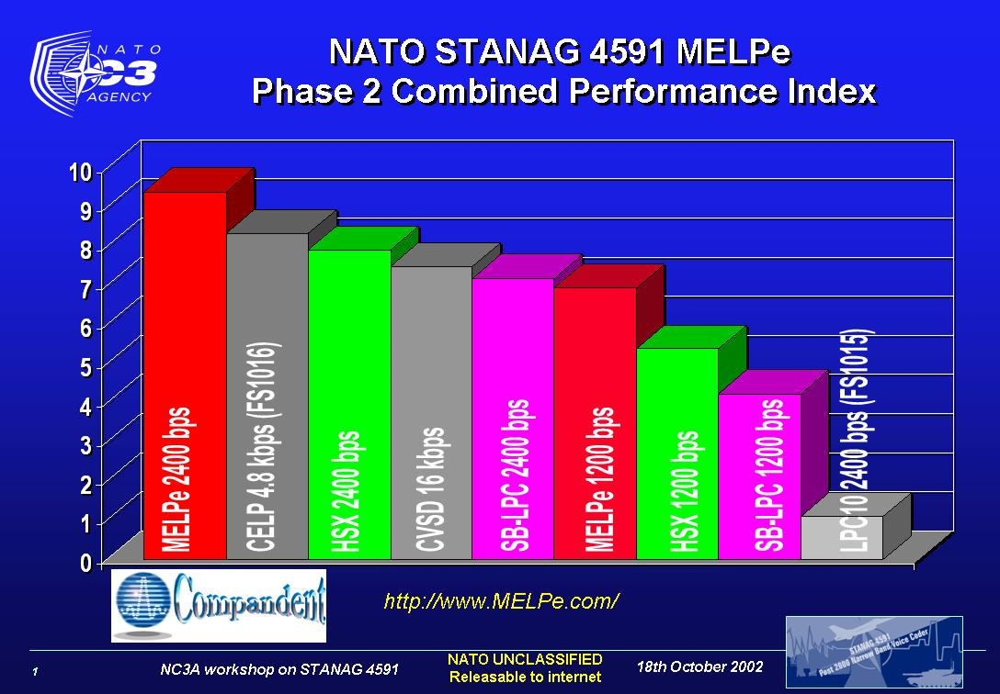

FAQ Table Of Content
-
1. INTRODUCTION AND GENERAL INFORMATION
- 1.0 Where can I find more information about the history of Secure Voice Coding?
- 1.1 Where can I find more details about Compandent's MELPe package and features (MIPS, memory resources, etc.)?
- 1.2 Where can I find a demo of Compandent's MELPe?
- 1.3 What does Compandent's MELPe suite include?
- 1.4 On what processors or platforms does your MELPe suite run?
-
4. WORKING WITH THE COMPANDENT'S MELPe PACKAGE
- 4.1 Do I need to reload the MELPe program every time the program is restarted or vocoder mode is changed?
- 4.2 What is the compressed bit format of the MELPe vocoder?
- 4.3 Can we operate the 2400 bps MELPe without using the 1200 bps (or 600 bps) one?
- 4.4 Can we use the 1200 bps (or 600 bps) MELPe without the 2400 bps one?
- 4.5 Can we use the MELPe vocoder without the noise preprocessor?
-
5. MELPe VS. MELP
- 5.1 Does MELPe sound better than MELP?
- 5.2 Should I use MELP rather than MELPe for legacy compatibility considerations?
- 5.3 Does MELPe have higher delay than MELP? and What is the MELPe delay?
- 5.4 The old MELP is known as MIL-STD-3005, what MIL-STD number is MELPe?
- 5.5 Does MELPe require a lot more meory and MIPS than the old MELP?
-
7. THE REQUIRED SW/HW ENVIRONMENT FOR COMPANDENT'S MELPe
- 7.1 What operating system, kernel, RTOS environment or host PC is needed to run your MELPe suite?
- 7.2 In order for you to provide support for example, do you require Companden's MELPe customers to purchase additional (potentially expensive) “peripheral” software, HPI, interface with other software such as Matlab, HyperSignal etc.?
- 7.3 Does Compandent's MELPe package run under TI's Code Composer Studio (CCS)?
- 7.4 What specific system or hardware is required to run Compandent's MELPe suite?
-
9. CHIPS AND STANDALONE DEVICES OR SYSTEMS WITH COMPANDENT'S MELPe
- 9.1 Can you provide MELPe vocoder chips?
- 9.2 Can you provide MELPe vocoder boards?
- 9.3 Is there any MELPe standalone device available?
- 9.4 Do you offer wireless communication based MELPe systems?
- 9.5 Do you offer MELPe systems with Video Modules + GSM/GPRS + GPS + Network Modules + Mass Storage Modules?
- 9.6 Do you offer high density MELPe boards (say 100-200 channels) for VoIP Servers or Gateways?
- 9.7 Do you offer MELPe based high-density telephony boards?
- 9.8 Do you offer MELPe based VoIP Radio Interoperability Gateways?
Frequently Asked Questions
1. INTRODUCTION AND GENERAL INFORMATION
1.0 Q: Where can I find more information about the history of Secure Voice Coding?
A: See A History of Secure Voice Coding: Insights Drawn from the Career of One of the Earliest Practitioners of the Art of Speech Coding.
1.1 Q: Where can I find more details about Compandent's MELPe package and features (MIPS, memory resources, etc.)?
A: See www.MELPe.com or for more details:
(a) for c54xx/c55xx, C64x+ (such as C674x C672x etc.), and OMAP (c55x based, c64x+ based etc..): MELPePackageFactSheet.pdf
(b) for c64xx: MELPePackageFactSheet6416.pdf
(c) for Analog Devices BlackFin ADSP-BF561 and TigerSharc (TS101, TS20x, etc.)
(d) for ARM Processors, GHS PowerPC, Android, Apple iOS
(e) All other processors and OS (Unix, Linux, Windows PC, MacOS, etc.)
1.2 Q: Where can I find a demo of Compandent's MELPe?
A: You may listen to our MELPe's audio demo at: www.MELPe.com
1.3 Q: What does Compandent's MELPe suite include?
A: Compandent's MELPe suite includes optional components such as MELPe encoder and/or decoder at rates of 2400, 1200 and/or 600 bps, optional transcoding between rates, and optional noise preprocessor. Our package was mostly written and optimized in Assembly language for different DSPs, it is C callable (far call) and self initialized. It includes main C programs for processing files and for real-time demo, comprehensive manual, the "certified" Test Vectors, Compandent's professional support (provided by the same world-class DSP and speech coding experts who participated in creating the MELPe standard), etc.. We also offer Compandent's MELPe suite for other platforms such as Windows, Unix, Linux, MacOS etc..
1.4 Q: On what processors or platforms does your MELPe suite run?
A: We have ported the MELPe to various processors and platforms including Texas Instruments' TMS320c54xx, TMS320c55xx, TMS320c64xx, C64x+ (such as C674x C672x etc.), and OMAP (c55x based, c64x+ based etc..), Analog Devices BlackFin ADSP-BF561 and TigerSharc (TS101, TS20x, etc.), Microchip PIC32MZ, ARM, Android, iOS, GHS PowerPC Windows, Unix, Linux and Apple MacOS. Our multi-channel MELPe implementations takes about 5%-15% real-time with today's CPUs such as Pentium 4, AMD, Ultra Sparc, etc.. We can port it to any needed platform.
2. COMPANDENT AND THE MELPe STANDARD
2.1 Q: Why does Compandent's MELPe sound better than the standard reference?
A. Compandent has been working on the MELPe package for many years now (since 2001). We have extensively tested our MELPe suite (a.k.a MELPe++ or MELPe-Plus-Plus) in many different environments and with a variety of speech data. We can show you examples where the standard reference produces hoarse speech or annoying clicks while Compandent's MELPe (MELPe++) produces much better sounding and cleaner speech. We thoroughly investigated any sign of a problem or bug and didn't give up until we resolved it in the best possible way, in order to make sure that our customers get the best sounding implementation! In fact, even combining Compandent's MELPe++ in a system that already uses MELP or MELPe on the other end is likely to improve quality on both ends! (compared to MELP or MELPe standard reference on both ends)
2.2 Q: How can I listen to Compandent's real-time MELPe vocoder?
A: Our package includes a main C program that runs the MELPe in real-time. You may run it, listen to it in real time, and even switch its configurations on the fly without reloading it.
2.3 Q: Who created the standard Test Vectors, and is your MELPe suite Test Vectors "certified"?
A: Excellent question! Compandent has contributed to the MELPe standard reference, and kept doing subsequent MELPe-related project for the US DoD. In fact, Compandent has created the standard reference's "certified" Test Vectors. Throughout our work over the years, we extensively improved and tested our MELPe implementation using additional data bases that are very relevant to the MELPe customers and applications.
2.4 Q: How can I verify the Test vectors?
A: Our package includes a main C program that processes Test Vector files. You may run it and then compare its output to the provided reference Test Vectors.
3. COMPANDENT'S BUSINESS TERMS AND BENEFITS
3.1 Q: What guarantee or warranty do you offer your customers?
A: We provide a 30 day money back guarantee that our MELPe performs according to our specifications, namely that it passes the Test Vectors, and meets the specified memory and MIPS requirements.
3.2 Q: Do you charge for software updates and bug fixes?
A: No! We want our customers to have the best implementation. When a bug fix or update is made, we provide it to our customers without charge for the lifetime of the product!
3.3 Q: Do you charge for technical support?
A: Normally not. We provide free support to our customers for a reasonable period that is more than sufficient for them to successfully integrate our MELPe suite into their product.
4. WORKING WITH COMPANDENT'S MELPe PACKAGE
4.1 Q: Do I need to reload the MELPe program every time the program is restarted or vocoder mode is changed?
A: No, you may simply re-run it and it initializes itself without a need to be reloaded.
4.2 Q: What is the compressed bit format of the MELPe vocoder?
A: Included with Compandent's MELPe suite is a detailed manual that explains the MELPe compressed bit format.
4.3 Q: Can we operate the 2400 bps MELPe without using the 1200 bps (or 600 bps) one?
A: Yes, in fact you may save much memory and MIPS by using the 2400 bps only.
4.4 Q: Can we use the 1200 bps (or 600 bps) MELPe without the 2400 bps one?
A: Yes, but your savings may be negligible if any, since the 1200 bps (or 600 bps) vocoder is a superset of the 2400 bps and is based on it anyway.
4.5 Q: Can we use the MELPe vocoder without the noise preprocessor?
A: Yes, and by doing so one may save some memory, MIPS and may need to license less IPR.
5. MELPe VS. MELP
5.1 Q: Does MELPe sound better than MELP?
A: Yes, the 2400 bps MELPe sounds better than the MELP. Furthermore, Compandent's MELPe suite (a.k.a MELPe++ or MELPe-Plus-Plus) sounds even better, since over the past years we have fixed numerous bugs and issues in MELPe, some of which even originated from the old MELP. We can show you examples where the MELP and MELPe standard reference produces hoarse speech or annoying clicks while Compandent's MELPe (MELPe++) produces much better sounding and cleaner speech.
5.2 Q: Should I use MELP rather than MELPe for legacy compatibility considerations?
A: At 2400 bps the MELPe and MELP uses a similar bit format, therefore a MELPe synthesizer would produce better quality speech than the MELP synthesizer for the same bit-stream. In other words, even if you communicate with a MELP based legacy device, you will improve the speech quality by utilizing a MELPe based new device on your end. So we would certainly recommend using MELPe rather than MELP. Furthermore, combining Compandent's MELPe++ in a system that already uses MELP (or even MELPe standard reference) on the other end is likely to improve quality on both ends! (compared to MELP or MELPe standard reference on both ends)
5.3 Q: Does MELPe have higher delay than MELP? and What is the MELPe delay?
A: At 2400 bps both MELPe and MELP have the same delay. The encoder (algorithmic) delay of MELPe is 42.625ms, 103.75ms and 126.25ms for the 2400, 1200 and 600 bps MELPe, respectively. The total end-to-end delay depends on how one computes it, and that may vary among different networks having different packet size and different delay, buffering, and processing. We can explain to you how the US DoD and NATO typically compute the MELP & MELPe delay in their networks, and how you may compute the end-to-end MELPe delay in your network. Included with Compandent's MELPe suite is a detailed manual that explains the MELP & MELPe delay. For more information please call us or contact us.
5.4 The old MELP is known as MIL-STD-3005, what MIL-STD number is MELPe?
A: Both MELP and MELPe are known as MIL-STD-3005. The MIL-STD-3005 is their US DoD standard number. The MELPe is a newer and enhanced version of MIL-STD-3005. So if your project includes specifications for MIL-STD-3005 that were written after the year 2001, they most likely refer to the MELPe rather than to the old MELP. The MELPe is also known as STANAG 4591, which is its NATO standard number. For more information please call us or contact us.
5.5 Does MELPe require a lot more memory and MIPS than the old MELP?
A: Not necessarily, that depends on what we are comparing. At 2400 bps both MELPe and MELP require similar memory and MIPS, so if you are required to use 2400 bps vocoder, then you would only benefit by using MELPe rather than the old MELP. The lower rates MELPe require similar amount of MIPS, but more memory (mainly ROM tables) than the 2400 bps. The MELPe's optional Noise-PreProcessing (NPP) may also add to the required memory and MIPS. For more information please see our factsheet or call us or contact us.
6. MELPe and MELP vs. other vocoders
6.1 Q: Are MELPe and MELP better than other vocoders such as AMBE, EMBE, STC, SBC and FSHC??
A: Yes, in 1996 MELP won the US DoD MIL-STD-3005 standard competition against other candidate vocoders such as (a) Frequency Selective Harmonic Coder (FSHC), (b) Advanced Multiband Excitation (AMBE), (c) Enhanced Multiband Excitation (EMBE), (d) Sinusoid Transform Coder (STC), and (e) Subband LPC Coder (SBC). Under the US DoD's extensive testing MELP received the highest score and was eventually selected as the standard. Several years later, the enhanced-MELP (MELPe) was developed and even surpassed the MELP's quality. Hence at bitrates of 2400, 1200, and 600, MELPe is the best vocoder available in real-time DSP implementation.
6.2 Q: Is MELPe better than the old secure voice standards such as FS1015 LPC-10e (2.4 kbps), FS1016 CELP (4.8 kbps) and CVSD (16 kbps)?
A: Yes, in 2002 as part of NATO testing for new NATO standard, MELPe was tested against other candidates such as France's HSX (Harmonic Stochastic eXcitation) and Turkey's SB-LPC (Split-Band Linear Predictive Coding), as well as the old secure voice standards such as FS1015 LPC-10e (2.4 kbps), FS1016 CELP (4.8 kbps) and CVSD (16 kbps). Subsequently, the MELPe won also the NATO competition, surpassing the quality of all other candidates as well as the quality of all old secure voice standards (CVSD, CELP and LPC-10e). The NATO competition concluded that MELPe substantially improved performance (in terms of speech quality, intelligibility, and noise immunity), while reducing throughput requirements. The NATO testing also included interoperability tests, used over 200 hours of speech data, and was conducted by 3 test laboratories world wide.

Figure 1. MELPe outperformed all other vocoders, won the 2002 NATO competition, and selected as STANAG-4591
7. THE REQUIRED SW/HW ENVIRONMENT FOR COMPANDENT'S MELPe
7.1 Q: What operating system, kernel, RTOS environment or host PC is needed to run your MELPe suite?
A: None! Our suite does not require and is not limited to any kernel or other specific environment, and does not consume precious memory for such. It uses C callable (far call) or Assembly callable functions, and you may simply and easily integrate it to any program or environment. As a part of our suite we provide example of main C programs that runs the MELPe vocoder, which you may use as guidelines for your application and its integration.
7.2 Q: In order for you to provide support for example, do you require Companden's MELPe customers to purchase additional (potentially expensive) “peripheral” software, HPI, interface with other software such as Matlab, HyperSignal etc.?
A: No we do not play such games! We do not waste our customers' time and money on such unnecessary "peripheral" software or GUI, that is not much useful for and is commonly irrelevant to the customer's actual product. One may choose to use such and we can provide such, but we don't suggest that as necessary. We provide our customers with a complete and robust and yet the most concise and efficient suite that contains all they really need, in order to allow them the fastest and easiest integration in moving forward with their product development, saving them development cost, and minimizing their time-to market!
7.3 Q: Does Compandent's MELPe package run under TI's Code Composer Studio (CCS)?
A: Yes, of course. Our suite is CCS ready, and we provide all the necessary GEL and project files. You may compile, load, run, and profile it under CCS. You may even process files or run it in real-time under CCS.
7.4 Q: What specific system or hardware is required to run Compandent's MELPe suite?
A: No specific hardware is needed. You may use your own target hardware or PC. For quick demo and development system we recommend you to start with TI's DSKs.
8. DSP AND DEVELOPMENT BOARD FOR COMPANDENT'S MELPe
8.1 Q: Which DSP would you recommend for MELPe, TMS320c54xx or TMS320c55xx?
A: You may use either one (or another DSP of your choice). Some use the TMS320c54xx for legacy considerations. (The TMS320c5416 is very popular). But for future considerations, we recommend using the TMS320c55xx, since the TMS320c55xx provides some advantages such as larger and more flexible memory space (which is particularly important if you use the complete MELPe suite and your product uses lots of additional Data RAM). The TMS320c55xx is even cheaper than the TMS320c54xx since TI is interested in advancing its adoption. Compandent offers its MELPe suite also for the TI's TMS320c64xx DSP, as well as Analog Devices BlackFin ADSP-BF561 and TigerSharc (TS101, TS20x, etc.), Microchip PIC32MZ, ARM, Android, Apple iOS, and GHS PowerPC.
8.2 Q: Would you recommend any specific DSP development board?
A: For DSP implementation we suggest using TI/Spectrum Digital's DSKs, which are really nice and reliable packages that include an easy to install development board, TI's Code Composer Studio (CCS), USB port, A/D/A converters, LEDs, DIP switches, and expansion headers for various purposes and/or daughter-cards such as Ethernet port, USB, RS232, RS422, parallel port, external codecs and many more. They also include schematics, should you need such for designing your product. Their cost is very reasonable! See for example:
DSK for TMS320c5416,
DSK for TMS320c5510
DSK for TMS320c6416
TMS320VC5515 DSP Evaluation Module, available from TI
OMAP5912 Starter Kit (DSK), also available from TI
TMS320C6424 Evaluation Module, also available from TI
TMS320C6474 Evaluation Module, also available from TI
TMDSOSKL137 OMAP-L137/TMS320C6747 Floating Point Starter Kit
TMDSLCDK138 OMAP-L138 development kit (LCDK)
TMS320C6748 DSP Development Kit (LCDK)
OMAP-L138 Development Kit (LCDK)
Analog Devices EZ-KIT Lite Evaluation Kit for ADSP-BF561 Blackfin Processor
Analog Devices EZ-KIT Lite Evaluation Kit for ADSP-TS201S TigerSharc Processor
Compandent offers its customers with real-time demos of MELPe running on these boards.
9. CHIPS, BOARDS, STANDALONE DEVICES OR SYSTEMS WITH COMPANDENT'S MELPe
9.1 Q: Can you provide MELPe vocoder chips?
A: Yes, we work with TI's excellent team to provide our customer specific MELPe vocoder based chips at a very reasonable cost. For more details, please call us or contact us.
9.2 Q: Can you provide MELPe vocoder boards?
A: Yes, we can provide you with boards having one DSP, and up to high density boards having up to 240 MELPe channels. For more details, please call us or contact us.
9.3 Q: Is there any MELPe standalone device available?
A: Yes, Compandent offers low-cost Data-Terminal Equipment (DTE) such as FLEXI-232 and FLEXI-PC104 for interfacing MELPe vocoders with external devices such as Rockwell Collins MDM-3001 and other modems. Also, Compandent has designed and manufactures such a portable device called MELCODER. We designed it for the US DoD and NATO needs. The MELCODER is considered the "golden standard" for MELPe communications by the US DoD and NATO. The MELCODER offers full duplex MELPe communications at each of the two rates, transcoding between the rates, activation or bypass of the noise preprocessor and the postfilter. It also offers on board PCM codec or PCM exchanged with external device or work station. One may conduct field or lab testing using it, or set a complete MELPe network using MELCODER devices. We can also provide you with cost effective solutions to feed MELPe data to your system (modem etc.), and we can implement customized interface for your needs. For more details about Compandent's MELCODER device please call us or contact us.
9.4 Q: Do you offer wireless communication and Ethernet based MELPe systems?
A: Yes, Compandent's FLEXI-232 and FLEXI-PC104 is an extremely versatile board that can be programmed to handle any required standard or customized communication protocol (beyond what a typical DSP may be capable of) including RS-232, RS-422, RS-423, USB, TCP-IP Ethernet, 802.11b/g Wireless, etc.. It also has user friendly control and set-up interface. In addition, the FLEXI-232 (and FLEXI-PC104) has general purpose I/O lines that can be customized to your special needs. It can be also delivered as a standalone portable device in appropriate enclosure. For more details please call us or contact us.
9.5 Q: Do you offer MELPe systems with Video Modules + GSM/GPRS + GPS + Network Modules + Mass Storage Modules?
A: Yes, Compandent and one of our partners have created a complete MELPe + Video Modules + GSM/GPRS + GPS + Network Modules + Mass Storage Modules system solution that runs under Linux, and includes optional connectors and slots for PC-104, EIDE, PCI, ISA, various ports for USB, mouse, keyboard, serial, Ethernet, and hard-drive. For more details about available modules and features please visit this page , call us or contact us.
9.6 Q: Do you offer high density MELPe boards (say 100-200 channels) for VoIP Servers or Gateways?
A: Yes, Compandent and one of our partners offer up to 240-port, 6400 MIPS, DSP PMC (PCI Mezzanine Card) form factor utilizing C5441 DSPs with on-board 400 Mhz PowerPC. A fully embedded telephony software library is also available for VoIP, V.22 and V.90 Modem, Fax, Conferencing, Telephony, MELPe and more. For more details please call us or contact us.
9.7 Q: Do you offer MELPe based high-density telephony boards?
A: Yes, Compandent and one of our partners offer a switched high density FXO telephone network interface controller card providing multiple 2 wire subscriber side loop start, ground start or CAMA trunks. An optional DSP provides telephony signaling and VoIP functionality. The board operates in conventional cPCI host bus or 2.16 PSB modes. Featured functions (a) 2:4 wire conversion and ring detection, (b) Telephone off hook, flash and dial pulse signaling generation, (c) Integral TSI provides line-line switching and access to the backplane H.110 bus, (d) Dual 10/100 Ethernet connections, and (e) T1/E1 ISDN channel bank operation. For more details please call us or contact us.
9.8 Q: Do you offer MELPe based VoIP Radio Interoperability Gateways?
A: Yes, Compandent and one of our partners offer a VoIP Radio Interoperability Gateway featuring universal radio control, VoIP Gateway and a customizable command and control GUI to a wide range of domestic and foreign customers. For more details please call us or contact us.
10. MULTI-CHANNEL AND MULTI-THREAD MELPe IMPLEMENTATIONS
10.1 Q: What DSP or platform would you recommend for multi-channel MELPe?
A: Compandent provides multi-channel MELPe implementation on all platforms! The number of channels per DSP may vary from one DSP to another, and it is also dependent on the MELPe components that you would like to run per channel and whether you need full-duplex or half-duplex channel. On the c54xx you will have more restrictions on the number of channels (up to 3 full-duplex or 6 half-duplex), while on the c55xx, c64xx, C64x+ (such as C674x C672x etc.), or OMAP (c55x based, c64x+ based (L-137 L-1328) etc..) you may have much more flexibility. Our MELPe is also offerd on Analog Devices BlackFin ADSP-BF561 and TigerSharc (TS101, TS20x, etc.), Microchip PIC32MZ, ARM, Android, Apple iOS and GHS PowerPC. We also offer multi-channel multi-thread real-time MELPe implementations running under Windows, Unix, Linux, MacOS etc. (such implementations can run around 10 channels with today's CPU).
11. MELPe IPR AND LICENSING COMPANDENT'S MELPe
11.1 Q: Suppose I developed MELPe implementation based on the standard, or obtained such from some source other than Compandent and I use it commercially, do I still need to pay any royalty to Compandent? (where commercially means any use other than the U.S. government or NATO or Partnership for Peace governments)
A: Regardless of where you got your MELPe implementation from, the answer is YES, if your implementation uses the MELPe standard reference that includes Compandent's contributions. Compandent has made numerous contributions to the MELPe standard reference (see for example USCO certificate of copyright registration numbers: TX0006703781 (postfilt.asm), TX0006845325 (lpc_lib.asm), TX0007161044 (lpc_lib.c)) , and many more. We reserve all our rights in it. We can provide you a complete list of our contributions upon request. Any party intending to develop products based on MELPe and use them commercially should contact Compandent regarding licensing terms and conditions, unless he or she is satisfied that said products do not contain Compandent's IP in the MELPe reference implementation. We also encourage you to contact all other IPR holders.
12. IMPORTANT NOTES TO DEFENSE CONTRACTOR RE MELP / MELPe
12.1 Q: Is MELP / MELPe HW & SW COTS and/or POSIX?
A: Yes, the MELP / MELPe related software and hardware is COTS and is available in various platforms and form factors such as COTS processors or chips, boards and portable devices. Easy to integrate & maintain COTS MELPe software is available in commonly used programming languages for COTS processors in floating-point and/or fixed-point arithmetic. Compandent also created multi-channel POSIX compliant MELPe real-time implementation for various operating systems such as Unix, Linux, Windows PC, MacOS, etc.. For more information see: Note to Defense Contractor Management and Engineering.
12.2 Q: Why is Compandent's MELP / MELPe package better?
A: Engineers who are not yet familiar with the MELP / MELPe code may mistakenly assume that the code they may have access to can easily be ported to and integrated in existing COTS hardware. But they may be in for a surprise! For more information re Why? and What we did to take the MELPe package to the next level please see: Note to Defense Contractor Management and Engineering.
12.3 Q: What should defense contractor management be aware of?
A: Fixing the existing issues in the MELP / MELPe standard reference is time-consuming and is likely to take several good months even for a highly competent and experienced DSP engineer. The Compandent's MELPe suite (a.k.a MELPe++ or MELPe-Plus-Plus) can save you the time, the risk, the uncertainty, and the need to recreate what is already available as COTS. For more information see: Note to Defense Contractor Management and Engineering.
12.4 Q: How can I quickly hook-up and test your MELPe with military equipment?
A: Compandent offers low-cost Data-Terminal Equipment (DTE) such as FLEXI-232 and FLEXI-PC104 for interfacing MELPe vocoders with external devices such as Rockwell Collins MDM-3001 and other modems.
13. BIT ERRORS AND FRAME ERASURE
13.1 Q: Does MELPe utilize error correction coding?
A: Yes, MELPe does utilize some level of forward error correction codes (FEC) incorporated in the MELPe bit-stream. Beyond that, you may add your own error correction and/or encryption.
13.2 Q: What about Frame Erasure, Burst Error, and Error Concealment?
A: Our MELPe is "packetized-network-ready". It accepts signals for frame erasure or burst error, and utilizes special techniques for error concealment in order to maintain its quality even in severe Frame Erasure Rate (FER) conditions. See demo at: www.MELPe.com
14. OTHER MELPe RELATED SOFTWARE AND FEATURES
14.1 Q: Can Compandent's MELPe be used as variable-rate coder?
A: Yes of course! Compandent's MELPe can switch rates and other parameters on the fly. We can also provide you with an algorithm to adjust the vocoder rate dynamically.
14.2 Q: Can you transcode between MELPe and other coders such as G.729D, or other G.7xx?
A: Yes, we can provide you with excellent solutions for transcoding between MELPe and G729D or any other vocoder.
14.3 Q: How can I perform bitstream sync acquisition that would work even in noisy channel conditions (i.e. in the presence of bit error)?
A: Compandent has developed a fast and robust algorithm for bitstream sync acquisition that is capable of tracking the synchronization signaling even in noisy channel conditions. It is useful for MELP, MELPe, and other vocoders.
 For details contact us, or Download MELPe Package Fact Sheet
For details contact us, or Download MELPe Package Fact Sheet
MELCODER - NSA & NATO's MELPe Test-Bed
MELCODER - NSA & NATO's MELPe Test-Bed developed by Compandent and used as the "Gold-Standard"